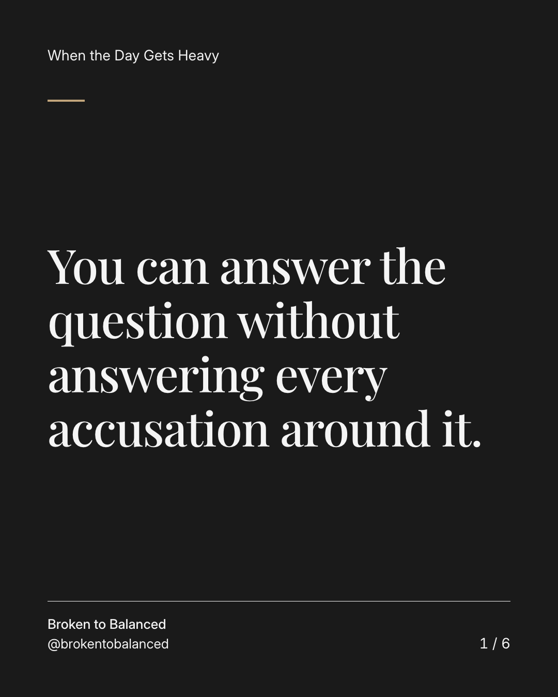
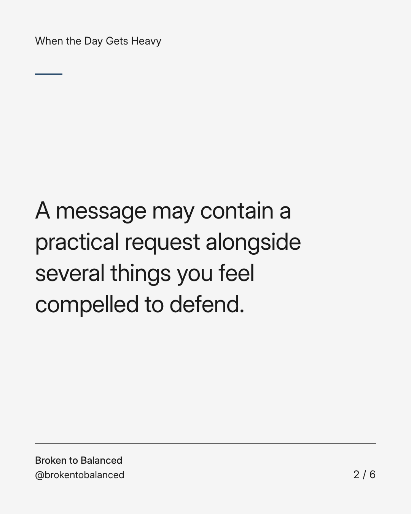
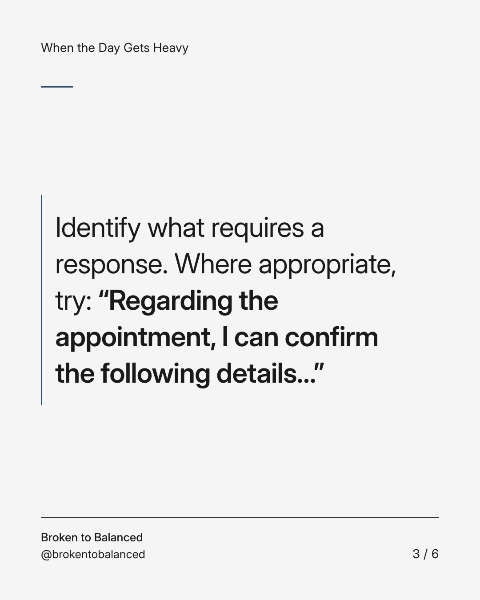
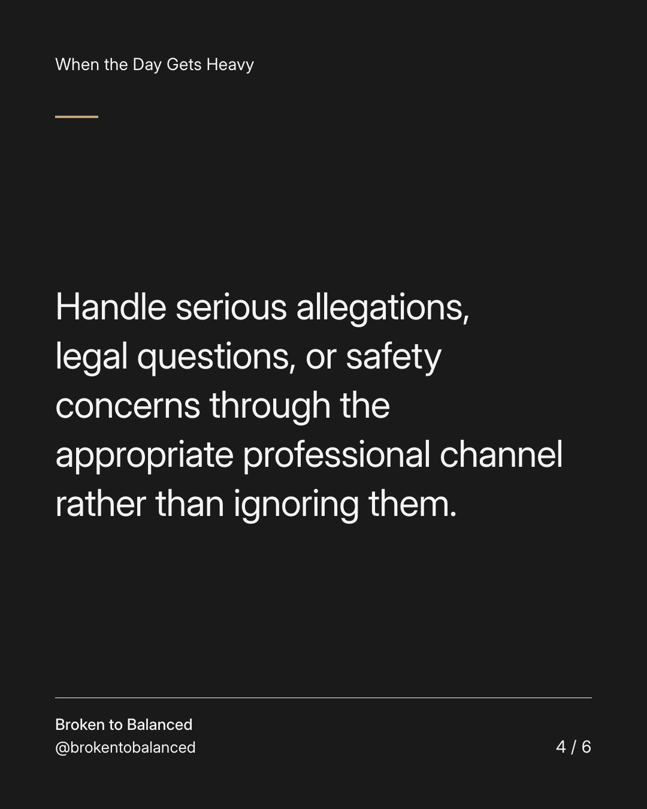
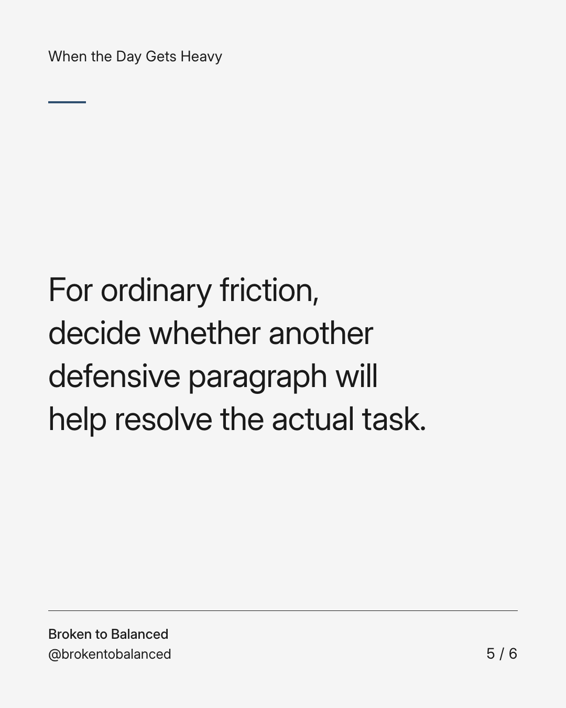
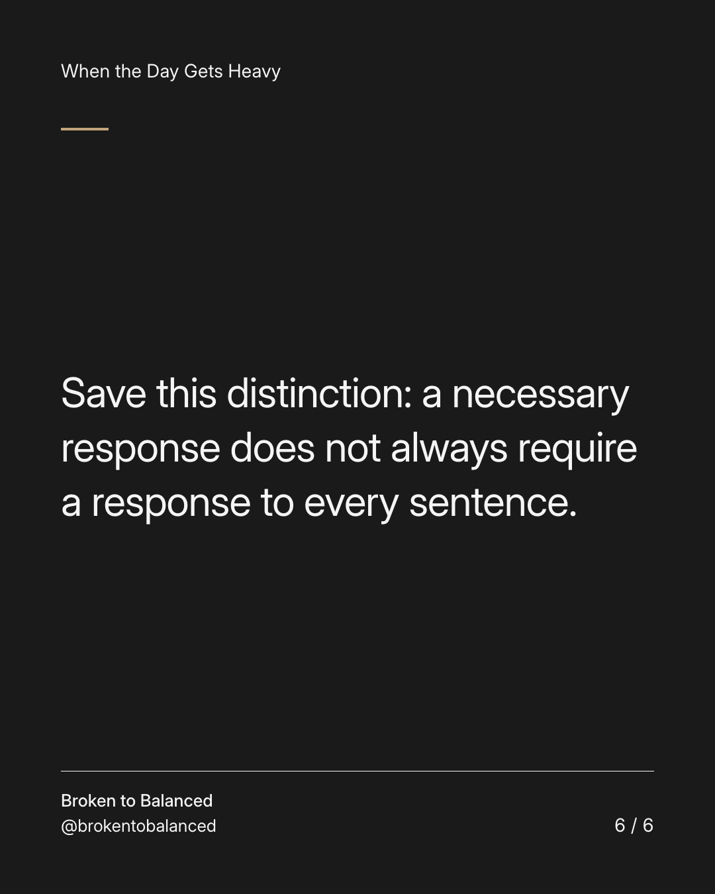

Exact text and accessibility text
You can answer the question without answering every accusation around it.
Slide 1 of 6. You can answer the question without answering every accusation around it.


Exact text and accessibility text
A message may contain a practical request alongside several things you feel compelled to defend.
Slide 2 of 6. A message may contain a practical request alongside several things you feel compelled to defend.


Exact text and accessibility text
Identify what requires a response. Where appropriate, try: “Regarding the appointment, I can confirm the following details…”
Slide 3 of 6. Identify what requires a response. Where appropriate, try: “Regarding the appointment, I can confirm the following details…”


Exact text and accessibility text
Handle serious allegations, legal questions, or safety concerns through the appropriate professional channel rather than ignoring them.
Slide 4 of 6. Handle serious allegations, legal questions, or safety concerns through the appropriate professional channel rather than ignoring them.


Exact text and accessibility text
For ordinary friction, decide whether another defensive paragraph will help resolve the actual task.
Slide 5 of 6. For ordinary friction, decide whether another defensive paragraph will help resolve the actual task.


Exact text and accessibility text
Save this distinction: a necessary response does not always require a response to every sentence.
Slide 6 of 6. Save this distinction: a necessary response does not always require a response to every sentence.
Exact caption
Plain-text fallback: select and copy the caption.